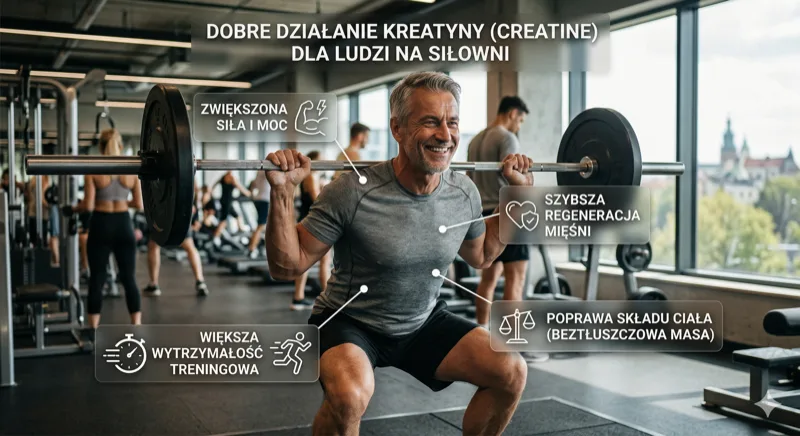

Dwa suplementy wracają w każdej rozmowie o treningu po pięćdziesiątce: białko w proszku, najczęściej serwatkowe, i kreatyna. Jedno wielu osobom nadal kojarzy się z kulturystami, drugie brzmi jak coś podejrzanie bliskiego dopingowi. Tymczasem oba mają naprawdę solidne zaplecze naukowe. I oba mogą mieć konkretne zastosowanie dla dojrzałych, aktywnych ludzi.
Szybka odpowiedź
Suplementacja po 50-tce działa najlepiej, gdy wynika z badań i realnych niedoborów, a nie z modnych list. Najczęściej sens mają witamina D, omega-3, B12 lub magnez, ale dawki zależą od wyniku. Jeśli bierzesz więcej niż 4 preparaty naraz, zrób przegląd z lekarzem, żeby ograniczyć interakcje i dublowanie składników. Jednym z częstych pytań jest też suplementacja kolagenu po 50-tce.
Kluczowe wnioski
Kluczowe wnioski
- Najważniejsze: Dwa suplementy wracają w każdej rozmowie o treningu po pięćdziesiątce: białko w proszku, najczęściej serwatkowe, i kreatyna.
- W artykule znajdziesz konkrety o: Białko po treningu — czy ma sens po 50-tce.
- Drugi kluczowy temat: Kreatyna po 50-tce — suplement, który naprawdę ma sens.
Jeśli dopiero układasz sobie podstawy treningu, zacznij też od tekstu jak zacząć na siłowni po 50-tce bez chaosu. Suplement ma sens dopiero wtedy, kiedy jest do czego go dołożyć.
Białko po treningu — czy ma sens po 50-tce?
Białko po treningu — czy ma sens po 50-tce. Ta sekcja porządkuje temat "Białko po treningu — czy ma sens po 50-tce?" w prosty sposób: najpierw najważniejsze zasady, potem bezpieczne wdrożenie i na końcu sygnały, które warto monitorować. Taki układ pomaga działać spokojnie, utrzymać regularność i szybciej odróżnić dobre wskazówki od przypadkowych porad z internetu.
Czym jest okno anaboliczne i czy naprawdę istnieje
Po treningu siłowym mięśnie są w stanie podwyższonej gotowości do odbudowy. Ten okres nazywa się oknem anabolicznym. To moment, w którym dostarczone białko jest wykorzystywane bardzo efektywnie do syntezy nowych białek mięśniowych, czyli do tego, na czym zależy każdemu, kto chce zachować albo odbudować mięśnie.

Źródło: Meta-analiza RCT, Nutrients, 2025
Czyli tak, okno anaboliczne istnieje. Ale nie jest tak absurdalnie wąskie, jak przez lata opowiadali guru z siłownianych magazynów. To nie jest 30 minut paniki i biegu do shakera. Masz zwykle znacznie więcej swobody niż tylko kilkanaście minut po treningu, a w praktyce jeszcze ważniejsze od samej minuty po treningu jest to, ile białka zjadasz w całym dniu.
Ile białka po treningu? Po 50-tce to ważniejsze niż myślisz
Przez lata powtarzano, że 20 gramów białka wystarczy każdemu. Nowsze badania przesuwają tę liczbę wyżej, szczególnie u starszych dorosłych. Mięśnie po pięćdziesiątce reagują słabiej na ten sam bodziec aminokwasowy niż mięśnie dwudziestolatka. Trzeba im po prostu dać trochę mocniejszy sygnał.

Źródło:Nutrients, 2025
Kluczowym aminokwasem jest leucyna. To ona uruchamia proces syntezy. I właśnie dlatego białko serwatkowe nadal jest tak mocne: ma bardzo dużo leucyny i bardzo dobrze się wchłania.
Whey czy białko roślinne — co jest lepsze
Białko serwatkowe nadal jest złotym standardem pod względem szybkości wchłaniania i zawartości leucyny. Ale to nie znaczy, że jest jedyną sensowną opcją.

Źródło:American Journal of Clinical Nutrition, 2025
W praktyce oznacza to tyle: jeśli nie tolerujesz laktozy albo po prostu wolisz roślinne źródła białka, dobra mieszanka grochu i ryżu ma sens. Liczy się nie tylko rodzaj odżywki, ale całkowite dzienne spożycie białka. Sam napis na opakowaniu nie buduje mięśni.
Oporność anaboliczna po 50-tce
Z wiekiem mięśnie stają się mniej wrażliwe na bodziec aminokwasowy. Naukowcy nazywają to opornością anaboliczną. Brzmi groźnie, ale praktyczny wniosek jest prosty: po pięćdziesiątce trzeba bardziej pilnować białka niż w młodości.
Źródło:Nutrients, 2023
Praktyczny wniosek? Po 50-tce celuj raczej w 30-40 g białka po treningu niż w symboliczne 20 g. I wybieraj źródła, które naprawdę dostarczają sensowną ilość leucyny.
Kiedy białko w proszku nie daje efektu
Teraz uczciwa część tej rozmowy. Białko w proszku nie działa jak magiczny proszek na mięśnie. Jeśli już jesz dużo białka z normalnego jedzenia, suplement nie zrobi z Tobą nic nadzwyczajnego. On uzupełnia niedobór. Nie tworzy cudów ponad rozsądną dietę.
Jeśli w dodatku jesz chaotycznie i ciągle wpadasz w schemat „od poniedziałku dieta”, przeczytaj też dlaczego dieta po 50-tce przegrywa z nawykami. Bo suplement nigdy nie naprawi bałaganu, który codziennie zaczyna się na talerzu.
Kreatyna po 50-tce — suplement, który naprawdę ma sens?
Kreatyna po 50-tce — suplement, który naprawdę ma sens. Ta sekcja porządkuje temat "Kreatyna po 50-tce — suplement, który naprawdę ma sens?" w prosty sposób: najpierw najważniejsze zasady, potem bezpieczne wdrożenie i na końcu sygnały, które warto monitorować. Taki układ pomaga działać spokojnie, utrzymać regularność i szybciej odróżnić dobre wskazówki od przypadkowych porad z internetu.
Czym jest kreatyna i jak działa
Kreatyna to naturalny związek produkowany przez organizm z aminokwasów. Znajduje się też w mięsie i rybach. Problem w tym, że z wiekiem jej zasoby w mięśniach nie są już tak komfortowe, a dieta rzadko daje tyle, ile przydaje się osobie aktywnej.
Mechanizm działania jest prosty. Kreatyna magazynuje się w mięśniach jako fosfokreatyna, która pomaga szybko odbudowywać ATP, czyli paliwo skurczu mięśniowego. Mówiąc po ludzku: masz trochę więcej zapasu do wykonania kolejnych powtórzeń, utrzymania siły i lepszego treningu.
Co mówi nauka o sile, mięśniach i kościach
Źródło: Meta-analiza badań, 2025

Ale kreatyna po 50-tce to nie tylko siła. Coraz więcej badań pokazuje, że może wspierać także skład ciała, zdrowie kości, a być może również pewne funkcje poznawcze. To właśnie dlatego wróciła do poważnej rozmowy o zdrowym starzeniu, a nie tylko o wynikach na siłowni.
Jeśli chcesz wejść głębiej w dawkowanie, bezpieczeństwo i najczęstsze błędy, przeczytaj kompletny przewodnik po kreatynie dla osób po 50-tce.
Źródło:Nutrition Reviews, 2025
Czy kreatyna jest bezpieczna
Kreatyna przez lata obrosła miejskimi legendami. Że niszczy nerki. Że to prawie steryd. Że od niej wypadają włosy. Że to coś „za mocnego” dla normalnego człowieka po pięćdziesiątce. Problem polega na tym, że badania tego po prostu nie potwierdzają.
Źródło:Frontiers in Nutrition, 2025
Oczywiście, jeśli masz chorobę nerek, bierzesz leki albo jesteś pod opieką lekarza z konkretnym problemem zdrowotnym, konsultacja ma sens. Ale dla zdrowej osoby aktywnej kreatyna nie jest kontrowersyjnym eksperymentem. Jest po prostu dobrze przebadanym suplementem.
Mity o kreatynie, które warto wyrzucić do kosza
- Mit: kreatyna niszczy nerki. Fakt: u zdrowych dorosłych badania tego nie potwierdzają.
- Mit: kreatyna to rodzaj sterydu. Fakt: to naturalny związek, nie steroid anaboliczny.
- Mit: trzeba robić fazę ładowania. Fakt: nie trzeba. Można po prostu brać 3-5 g dziennie.
- Mit: kreatyna jest tylko dla młodych chłopaków z siłowni. Fakt: osoby po 50-tce mogą skorzystać z niej równie mocno, a czasem nawet bardziej.
Jak brać kreatynę po 50-tce
Tutaj nie ma wielkiej filozofii. Najlepiej przebadana forma to zwykły monohydrat kreatyny. Nie „ultra turbo matrix”, nie pięć składników o kosmicznych nazwach. Zwykły monohydrat.

- Forma: monohydrat kreatyny.
- Dawka: 3-5 g dziennie.
- Kiedy: dowolna pora dnia, byle regularnie.
- Czy robić ładowanie: nie ma takiej potrzeby.
- Kiedy widać efekt: zwykle po kilku tygodniach systematycznego stosowania.
A jeśli nadal największy problem nie leży w suplementach, tylko w tym, że trudno Ci w ogóle ruszyć regularnie, wróć do tekstu jak zmusić się do ćwiczenia po 50-tce. Bo najpierw musi istnieć nawyk, dopiero potem warto dopinać dodatki. Dodatkowo warto sprawdzić praktyczny plan jedzenia z artykułu dieta po 50-tce kontra nawyki, bo to on najczęściej decyduje, czy suplementy mają realny sens. Jeśli regularnie pijesz alkohol i liczysz na lepszą regenerację po treningu, przeczytaj też co wino po 50-tce robi z mięśniami, snem i odbudową po wysiłku.
Co brać, czego nie brać — prosty werdykt?
Oba suplementy mają solidne podstawy naukowe. Ale nie są magią. Działają jako wsparcie dla treningu i diety, a nie jako zamiennik jednego i drugiego. Po 50-tce warto wdrażać te zasady spokojnie i regularnie, obserwując reakcję organizmu oraz łącząc je z codziennym ruchem i regeneracją.
- Białko serwatkowe albo roślinne: warto, jeśli nie dobijasz do sensownej ilości białka z jedzenia.
- Kreatyna monohydrat: warto przy regularnym treningu siłowym. To jeden z najmocniej obronionych suplementów na rynku.
- Czego zwykle nie warto brać bez potrzeby: BCAA, spalaczy tłuszczu, pre-workoutów pełnych stymulantów.
Najkrótsza wersja jest taka: jeśli jesz za mało białka, białko w proszku pomaga. Jeśli trenujesz siłowo, kreatyna ma sens. Jeśli nie trenujesz, nie śpisz i jesz jak popadnie — żaden słoik nie uratuje sytuacji.
Zobacz też: jeśli chcesz poszerzyć temat, zajrzyj do tekstów o ukrytym cukrze po 50-tce i lektynach, szczawianach i fitynianach. Te materiały dobrze uzupełniają ten wątek i pomagają przełożyć wiedzę na codzienną praktykę.
Źródła
Źródła
- [1] Nutrients — strona czasopisma; publikacje o podaży białka, leucynie i starszych dorosłych.
- [2] American Journal of Clinical Nutrition — strona czasopisma; badania żywieniowe dotyczące jakości białka i starzenia.
- [3] Nutrition Reviews — przeglądy systematyczne dotyczące białka, kreatyny i funkcji mięśniowych.
- [4] Frontiers in Nutrition — publikacje przeglądowe i kliniczne o bezpieczeństwie suplementacji.
- [5] NIH Office of Dietary Supplements — materiały instytucjonalne pomocne przy ocenie bezpieczeństwa suplementów.
Najczęściej zadawane pytania?
Jakie suplementy po 50 warto rozważyć w pierwszej kolejności?
Najczęściej rozważa się suplementy pod konkretne niedobory i potrzeby, a nie gotowe zestawy na wszystko. Decyzję warto oprzeć o dietę, badania i leki.
Czy po 50 trzeba suplementować białko, witaminę D i omega-3?
Nie zawsze każdy potrzebuje wszystkiego jednocześnie. Najlepiej dobierać suplementację indywidualnie po ocenie stylu życia i wyników badań.
Czy suplementy mogą zastąpić dietę i trening po 50?
Nie, suplementy są tylko dodatkiem. Fundamentem pozostają ruch, sen i dobrze ułożone jedzenie.
Jak wdrożyć to po 50-tce krok po kroku?
Zacznij spokojnie: wybierz jeden mały krok na ten tydzień, obserwuj reakcję organizmu i dopiero potem dokładaj kolejne elementy. Najlepsze efekty daje regularność, a nie tempo.